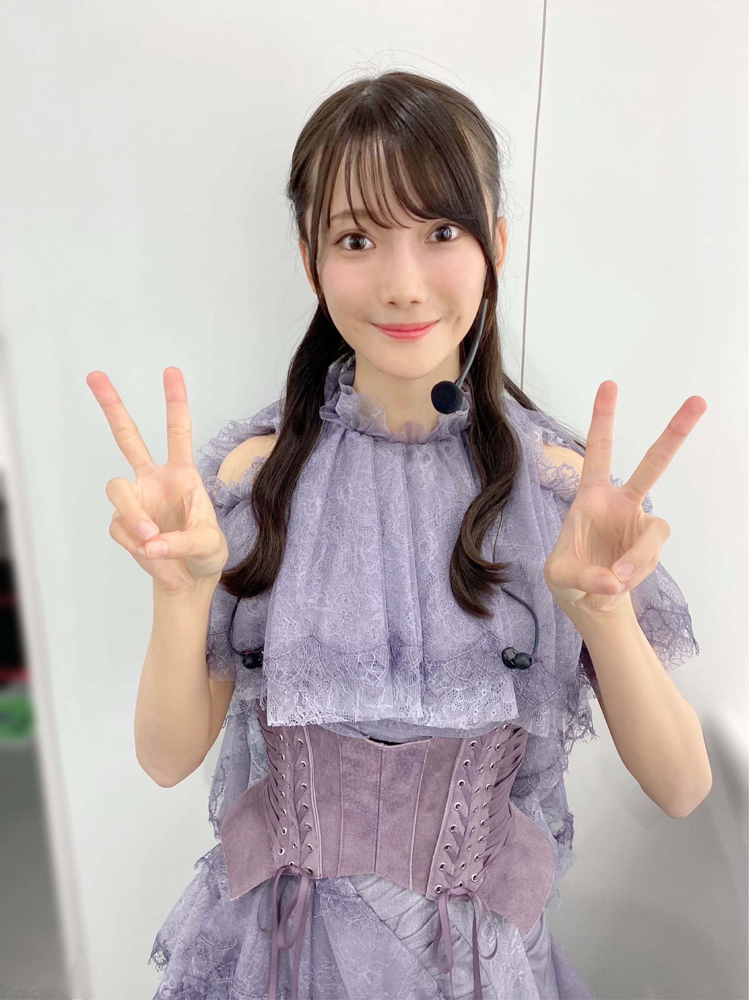
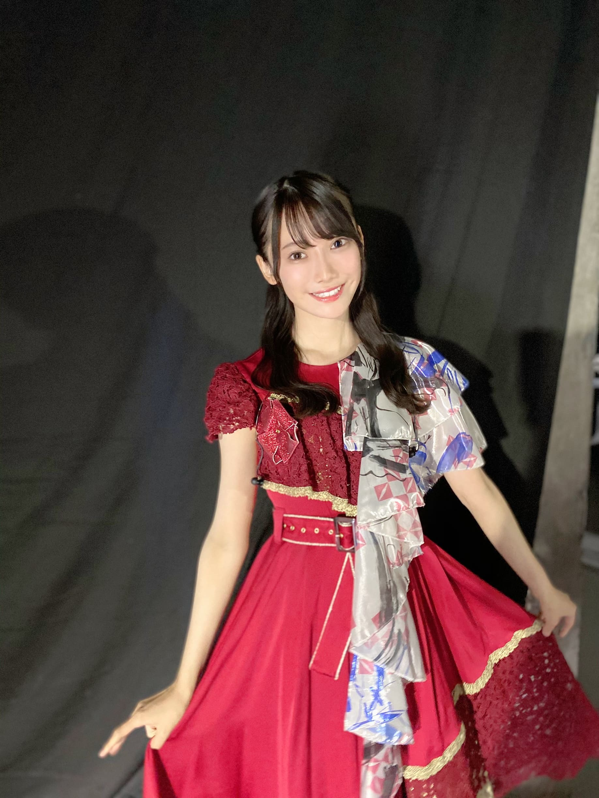
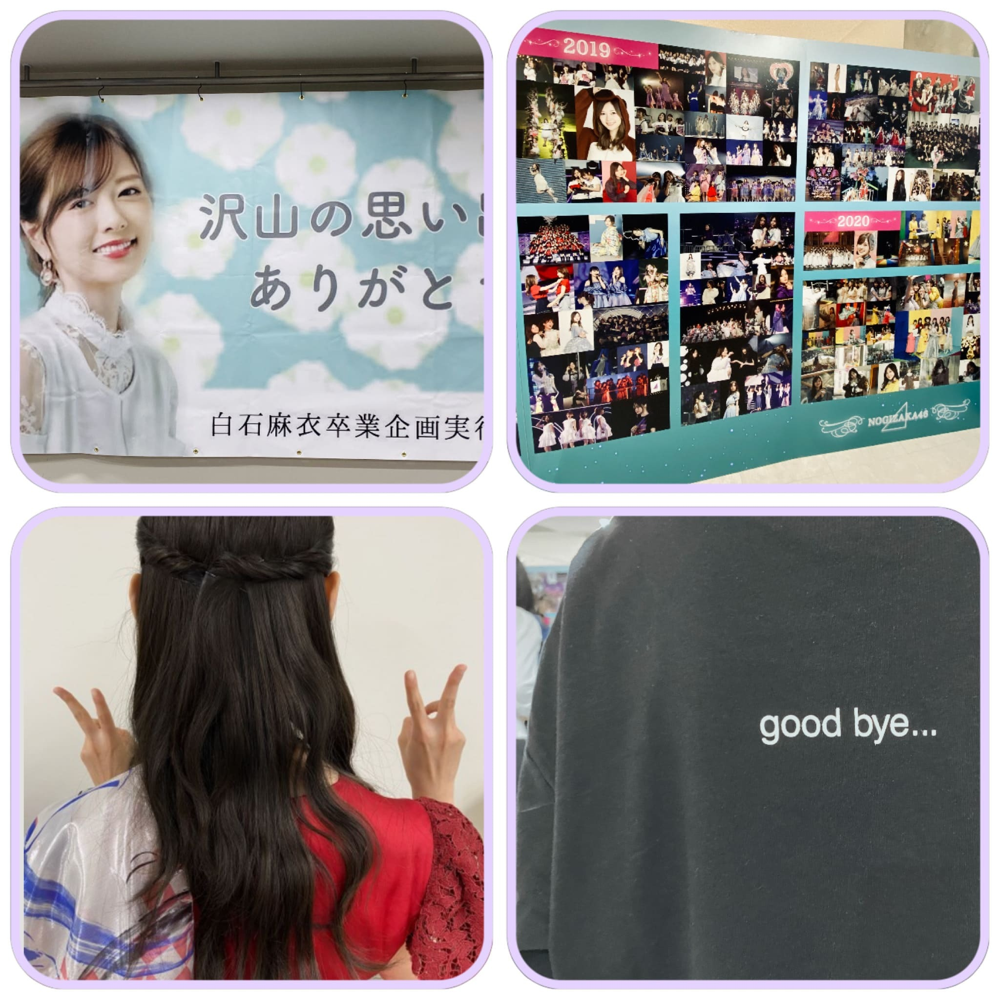
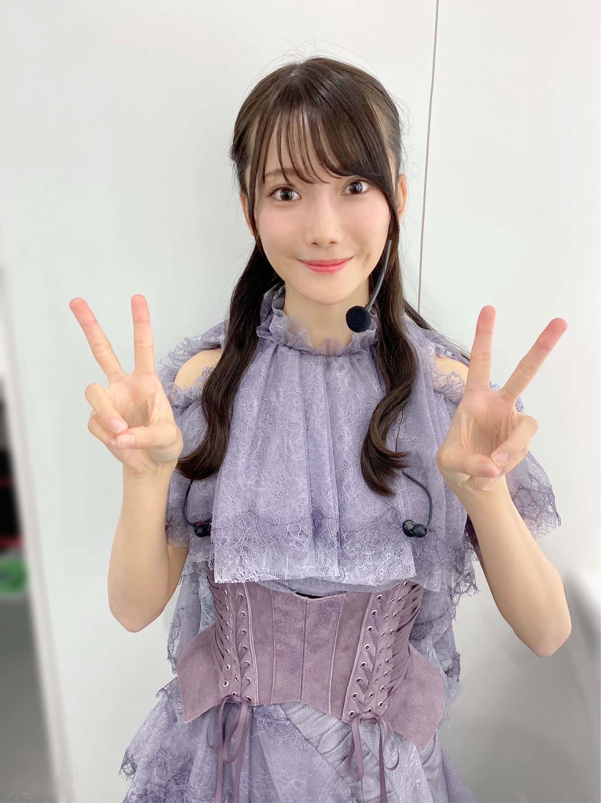
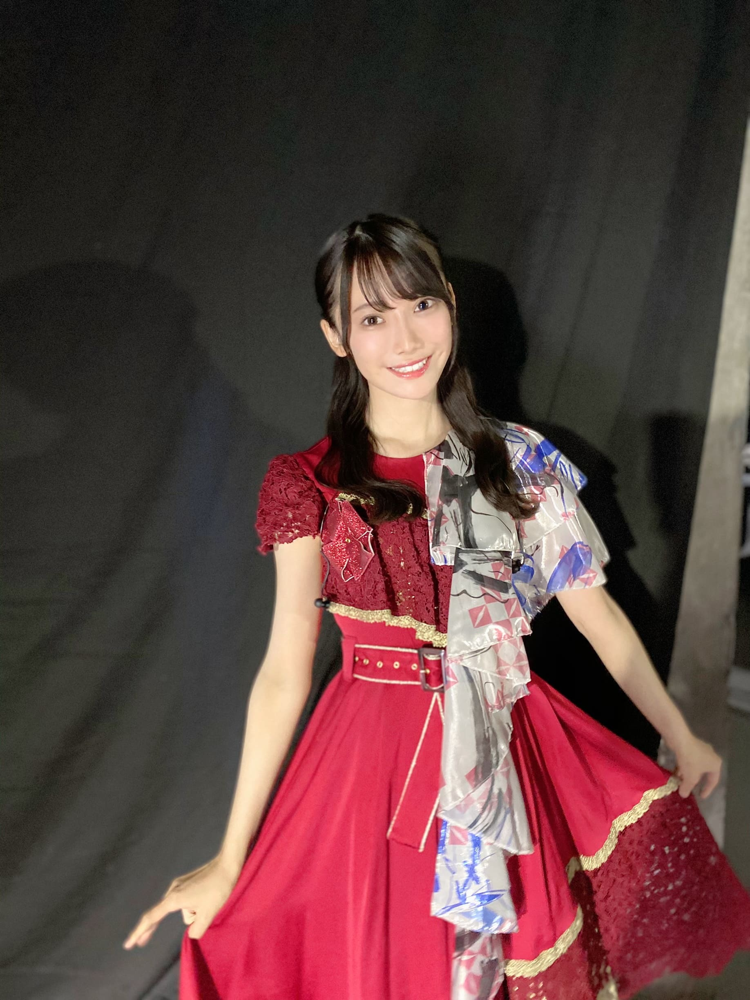
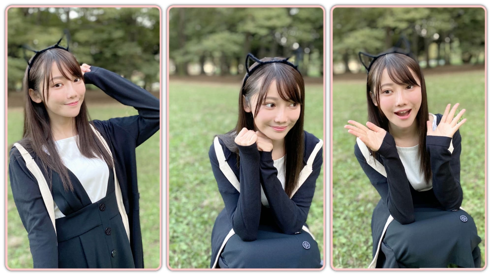
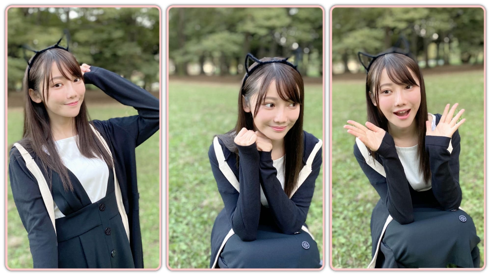
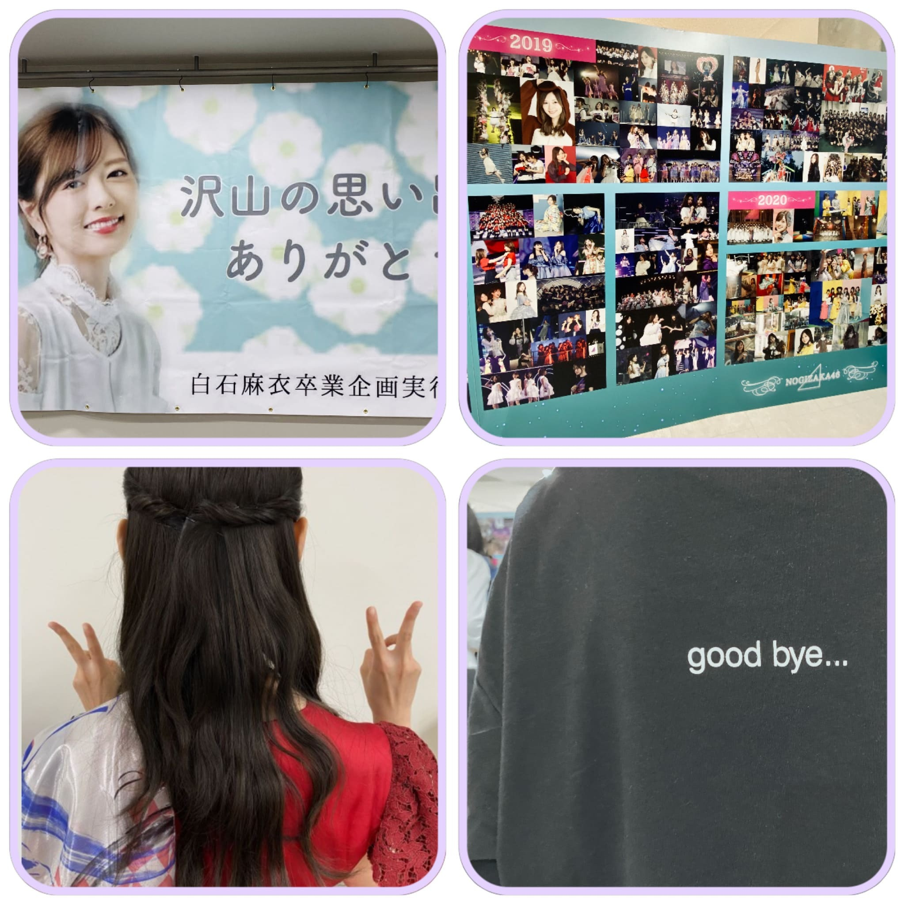

2020/1103Tue先輩方の優しさに涙した日...黒見明香(16)
今日はなんと漫画の日✨ 寒い中、今日も一日お疲れ様でした✩︎⡱
ココを見つけてくださり ありがとうございます♪
こつこつ 『鬼滅の刃』を揃えている
乃木坂46 新４期生の黒見明香です。
すこーしだけ自己紹介させてください☺︎
♪:*:･･:*:･･:*:･･:*:･･:*:･･:*:･♪:*:･･:*:･･:*:･･:*:･･:*:･･:*:･♪
黒見 明香（くろみ はるか）
2004年1月19日生まれ 16才
香港生まれ・東京都出身です
あだ名： くろみん・黒見ちゃん
3の倍数9・6・3(くろみ)
と覚えてもらえたら嬉しいです♪
＊
↓頂いたコメントから
◎ くろみんは２重跳び出来ますか？
実は、出来ないの〜( ´_ゝ`)うぅ...
かけっこはビリ、鉄棒の逆上がりも自転車も乗れずです。
体力テストでも『握力最低点』でした...Σ（ﾟдﾟll）
＊
小学生の時、缶入りの色鉛筆やクーピーが
上手く開けられなくて、
全力で何度も引っぱって、やっと開いたー！
...瞬間に、全部ぶちまける...
を繰り返していたら、迷惑すぎて、
周りの子が開ける当番となり、、、
ホントにごめんなさい\(//∇//)\
＊
唯一、柔軟性だけ 最高点だったのが、
嬉しすぎて忘れられない思い出なの♪
(コピーして部屋に貼ってましたっー(*ˊᵕˋ*)੭ 笑）
♪:*:･･:*:･･:*:･･:*:･･:*:･･:*:･♪:*:･･:*:･･:*:･･:*:･･:*:･･:*:･♪

-:-:୨୧:-:- 素敵な"初めての歌唱衣装"も、気付いたらダブルピース...( ´_ゝ`)
⚫︎今日はダブルピースがない！なので寂しいです...
カメラを向けられるとついやってしまう
ワンパターンの、ダブルピース・・\(//∇//)\
やっぱりあったよ〜笑
♬ *。♩*。♬

-:-:୨୧:-:- 「よしよし、"世界で一番孤独なLover"の深紅の衣装ではダブルピースしてないゾ」と思っていたら、しつこく指はうっかりピースでした....( ´_ゝ`)うそーん
ちょうど装置が私の目の前だったので、
リハーサル時、分かっているのに上から下からの勢いに、
先輩方が、瞬きもせず笑顔のままパフォーマンスされているのを見て、
⚫︎そのビブス俺もほしいもん。グッズとして売ってくれへんかな？笑
【 ノギザカスキッツACT2✨ 】
恥ずかしくて、人生黒歴史ベスト3に入る位だけど、、
『今までどこでも言ったことがない』ということで
マネージャーさんに大丈夫なのかご相談したところ...
♪:*:･･:*:･･:*:･･:*:･･:*:･･:*:･♪:*:･･:*:･･:*:･･:*:･･:*:･･:*:･♪

-:-:୨୧:-:-思い出写真・・・右下は白石麻衣さんのプロデュースTシャツを着た瑠奈ぴの背中を〜グッバイの文字が切なくて、思わずパシャリ(*´-`)
⚫︎はじける笑顔がすっごい似合うのでもっと笑ってね(＾◇＾)
♪:*:･･:*:･･:*:･･:*:･･:*:･･:*:･♪:*:･･:*:･･:*:･･:*:･･:*:･･:*:･♪
ブログやお手紙で、たくさんのコメントや感想送って下さり
本当にありがとうございます✩︎⡱
今回、初めてコメントしました！というあなたも、
こないだの続きの話だよー！と教えて下さるあなたも、
大切な時間を使ってお話しして下さり
本当にありがとうございます✨
あなたに出逢えた奇跡に、感謝しながら、
大事に、一つずつ全部読ませて頂いています((〃ω〃))
皆さんのことを知ることが出来る、
私の１日の中で『１番幸せな時間』です♩
直接お話しできる時が、 待ち遠しいです✩︎⡱
＊
祝日で少しほっとできたよー！という方も、
卒業コンサートロスで切なくなっちゃったり、
なんだか体調イマイチだよー、疲れちゃったよーって方も
本当に、今日も一日 お疲れ様でした✩︎⡱
きっと心も、身体も、しんどい時もあるかと思います。。
どうぞ、皆さんが 少しでも
ひとときリラックスできますように...✩︎⡱
と願っています(*´-`)
初めて会える日を、楽しみに待っています♪
＊
明日は、お芋を食べる姿も可愛い 璃果ちゃんですよー♬
読んでくださり、本当にありがとうございます☺︎
次回も、会えたら嬉しいなぁ✨
またねヾ(･ω･*)
くろみはるか☺︎
☆ 本日のあなたのラッキーナンバー：❺ と ❶
♪:*:･･:*:･･:*:･･:*:･･:*:･･:*:･♪:*:･･:*:･･:*:･･:*:･･:*:･･:*:･♪
・
・
・
＜ちょこっとアンコール♬笑＞
すごく長いので、時間ある時にでも☺︎笑
♬ *。♩*。♬
⚫︎みり愛ちゃんは『46時間TV』の電視台でも披露してたようにダンスがとても上手だから、振り付けとか判らなかったらみり愛ちゃんに聞くと良いよ
○ありがとう！そうするねヾ(･ω･*)o 躊躇してたら余計迷惑掛かっちゃうよね汗
優しい先輩方に、積極的に、質問するよう頑張ります！
♬ *。♩*。♬
⚫︎研修生ツアーから一年。先が見えない中でも一生懸命頑張ってくれてありがとう
○こちらこそだよ〜(*´-`)ありがとう。。。
先が見えない中「得体の知れないわたし達(©︎奈於ちゃん）」を見守って下さり、応援して下さり、本当にありがとう。
Overtureがかかる中、「お客様、来てくださっているかなぁ...」「チケット買ってしまって後悔していないかなぁ...」とぐるぐる考えながら一歩踏み出していった時に、
会場で、色とりどりの、三つの坂が混ざったサイリウムを振って、手作りのグッズを掲げて、"がんばれ〜！！！と声を出し、応援してくださった風景は、一生忘れません✨
♬ *。♩*。♬
⚫︎名前ですが、あすかちゃんと思っていたら、はるかちゃんなんですね。。。
⚫︎黒見さんのお名前の由来は何ですか？
♬ *。♩*。♬
⚫︎200回目のコメントになりました。ブログを読んで、コメントする事が本当に楽しく感じます。
○すごい✨わたしも、みんなのコメントを読んで、お話できるのがすっごく楽しいの〜☺︎
（よく「短くてごめんね」て書いてくれるのだけど、無理しないで"元気だよ"の一言でも、ほっとして嬉しいよヾ(･ω･*)oありがとう♪）
♬ *。♩*。♬
⚫︎くろみんは今年もいい子だったの？
じゃないとそもそもサンタさんが来ないよ～～（笑）
○たしかに・・・Σ（ﾟдﾟll）
残り２ヶ月、気が抜けない・・・笑
みんなにもサンタさん✨が来ますようにー!!
♬ *。♩*。♬
⚫︎逆立ちの練習のお話しが大好きです。
いつか再現した写真アップしていただけたら永遠に笑顔になれます。
⚫︎ファンネームそろそろ決まった？
ワイはくろみ〜ずがいいと思うわ！
○タイミングに悩んでるよー^^;
⚫︎いまメンバー間で流行ってることとかある？
○楽屋でよくさつま芋（干し芋）や甘栗をよく食べているメンバーが多いよ♬
⚫︎ハロウィン、お菓子作りしましたか？♡
⚫︎初めて買った乃木坂のグッズってなんですか？覚えてますかね？笑
○やっぱり定番、サイリウムだよーヾ(･ω･*)o
⚫︎くろみんは駅伝見ましたか？
♬ *。♩*。♬
部活の大会や、体育祭、授業や課題頑張ってるよというお話しや、5連勤、バイト疲れたよ〜や、英検・ワープロ検定頑張るよーて決意、席替えで前になっちゃったや体調回復の為頑張ってるよー！てエピソードもお話ししてくれてありがとう。一つ一つ、大切に読ませていただいてるよ〜✨
愛用マグカップのお話や、揚げパンのこと、刀剣乱舞や、男性ファッションのこと、「白」の時代、部活の先輩のこと、出会いを大切にという教訓も、宇宙と光のスピードのお話もすごく興味深く読ませて頂いたよーヾ(･ω･*)o
そして、お誕生日を迎えるあなたへ・・
✨HAPPY BIRTHDAY✨
どうぞ素敵な一年になりますよう✩︎⡱
♪:*:･･:*:･･:*:･･:*:･･:*:･･:*:･♪:*:･･:*:･･:*:･･:*:･･:*:･･:*:･♪
ここまで読んでくださったアナタ、ほんとうにありがとう♡
またねヾ(･ω･*)
ココを見つけてくださり ありがとうございます♪
こつこつ 『鬼滅の刃』を揃えている
乃木坂46 新４期生の黒見明香です。
すこーしだけ自己紹介させてください☺︎
♪:*:･･:*:･･:*:･･:*:･･:*:･･:*:･♪:*:･･:*:･･:*:･･:*:･･:*:･･:*:･♪
黒見 明香（くろみ はるか）
2004年1月19日生まれ 16才
香港生まれ・東京都出身です
あだ名： くろみん・黒見ちゃん
3の倍数9・6・3(くろみ)
と覚えてもらえたら嬉しいです♪
＊
↓頂いたコメントから
◎ くろみんは２重跳び出来ますか？
実は、出来ないの〜( ´_ゝ`)うぅ...
かけっこはビリ、鉄棒の逆上がりも自転車も乗れずです。
体力テストでも『握力最低点』でした...Σ（ﾟдﾟll）
＊
小学生の時、缶入りの色鉛筆やクーピーが
上手く開けられなくて、
全力で何度も引っぱって、やっと開いたー！
...瞬間に、全部ぶちまける...
を繰り返していたら、迷惑すぎて、
周りの子が開ける当番となり、、、
ホントにごめんなさい\(//∇//)\
＊
唯一、柔軟性だけ 最高点だったのが、
嬉しすぎて忘れられない思い出なの♪
(コピーして部屋に貼ってましたっー(*ˊᵕˋ*)੭ 笑）
♪:*:･･:*:･･:*:･･:*:･･:*:･･:*:･♪:*:･･:*:･･:*:･･:*:･･:*:･･:*:･♪

-:-:୨୧:-:- 素敵な"初めての歌唱衣装"も、気付いたらダブルピース...( ´_ゝ`)
⚫︎今日はダブルピースがない！なので寂しいです...
カメラを向けられるとついやってしまう
ワンパターンの、ダブルピース・・\(//∇//)\
やっぱりあったよ〜笑
♬ *。♩*。♬
前回のブログは、卒業コンサート翌日に
白石麻衣さん♡ 中田花奈さん♡へ、そして
乃木坂を支えて一緒に歩んでくださるあなたへの
あふれる想いと感謝を、そのままお話しさせて頂きました✩︎⡱
コンサート翌日のありがとうはココだよ〜☺︎↓
＊
今回は、そんなコンサートの
こぼれ話や裏話を、お話しさせてくださいね (*ˊᵕˋ*)੭
♬ *。♩*。♬
⚫︎まいやんも後輩たちが一生懸命リハしてくれてるって言ってたように、動き揃ってた！！
⚫︎ダンス一生懸命真面目に練習したのがわかりますよ。もっと観たいな？
⚫︎ダンス一生懸命真面目に練習したのがわかりますよ。もっと観たいな？
さくちゃん、かっきー、やんちゃん、レイちゃん、せいらちゃん...と11人の仲間がリードしてくれて、放課後集まって自主練習で教えて貰ったり、動画でダンスをチェックしてくれて、修正点やアドバイスを分かりやすく教えてくれて、、、本当に有難かったです。
今まで経験してきた経験、重ねてきた努力の凄さをあらためて実感し、こうして当たり前のように、"出来る人が後から来たメンバーに教えてくれる"のが嬉しくて、感動し、一層「白石麻衣さんの卒業コンサートを最高の形でお送りせねば！」と気持ちが引き締まりました。
＊
⚫︎白石さんと写真は撮れましたかー？
本当に嬉しいことに「とりましょ、とりましょ〜♡」と
優しく仰ってくださって、一生の宝物ができました(*´-`)
それから後日、ずうずうしくも、
ずっとお伝えしたかったお礼をお伝えさせて頂いたら...
"黒見ちゃん"と呼んでくださって、
"一生懸命な姿を見て応援したくなったよ！"
と伝えてくださいました。
見ていて下さったことに、
白石さんの心の温かさ、優しさに、
感動で、"こんなことがあるのか..."と震えました。。。
＊
お誕生日を迎えられたみり愛さん♡が
"実はリハから見てたんだよ" と伝えて下さり、
"分からないことあったら、いつでも聞きにおいで"
と心強く お話ししてくださいます。
＊
自分のことでいっぱいいっぱいで、
周りを見る余裕も、ズレにも気付けていない、
下手すぎる新メンバーたちのことも、、
こうして見ててくださる先輩方がいる。。
後ろをついてきてる、迷いがちな頼りない後輩を、
振り返って見守っててくださる、
当たり前のように、手を差し伸べてくださる...
乃木坂の優しさに感激し、心がじわーっと温かくなって
涙がこぼれました...(´•ω•̥`)
＊
以前、ここの ブログコメントに、
「学校で、どうやって友達をつくったらいい？」
「人見知りで、職場でどうやって話したらいい？」
という悩みを書いてくれました。
お返事になるか分からないけれど、
きっと「どこかで見ててくれる人はいるよ」という
小さい時の外国でのエピソードを、書いていました。。
帰国後、周りに馴染めなかったころのお話↓
＊
どうか、今、長すぎるこの説明下手なブログ(ごめんね)を読んでいる、
乃木坂を囲んでくださる家族である"あなた" のこと、
わたしも、そして周りにも、"必ず見ている人がいるよ！"
って少しでも伝わったら嬉しいなぁ...(*´-`)✨
もし辛いことやしんどいことがあった時も、
一緒に手を取り合って、励ましあって！
これからも坂を上って行けたら嬉しいな。。。と
乃木坂の大好きな先輩方が届けてくださる温かさ、優しさに
心震わせながら、あらためて思った出来事でした... ｡ﾟ(｡ﾉω＼｡)ﾟ｡
♬ *。♩*。♬
⚫︎愛する人への一番の恩返しは、成長した自分を見せることです！
⚫︎まいやんやかなさんが安心して乃木坂を見守ってくれるように頑張ってね？
⚫︎まいやんやかなさんが安心して乃木坂を見守ってくれるように頑張ってね？
再びお会いできた時に「成長したね！」「やっぱ乃木坂だな」
と言っていただけることを目標に
これからも先輩方の背中を見習って、
必死に努めたいです (. ≧ω≦)ﾉ
＊
オフィシャルサイト、Instagram やスタッフさんのtwitterも開設され、
これからの白石麻衣さんのご活躍も、楽しみですね♪
一緒にわくわくしましょうねー (*ˊᵕˋ*)੭
白石麻衣さん♡オフィシャルサイト✨↓
♪:*:･･:*:･･:*:･･:*:･･:*:･･:*:･♪:*:･･:*:･･:*:･･:*:･･:*:･･:*:･♪

-:-:୨୧:-:- 「よしよし、"世界で一番孤独なLover"の深紅の衣装ではダブルピースしてないゾ」と思っていたら、しつこく指はうっかりピースでした....( ´_ゝ`)うそーん
♬ *。♩*。♬
⚫︎真夏さんはキャプテンということで、自分の感情は置いといて
周囲を沢山気遣っていたんだね？
秋元真夏さん♡は、9年以上一緒に過ごし、共に闘ってきた、
白石麻衣さんとの大切なお別れの時を、きっと真夏さんご自身よりも、
見送ってくださる全国の・海外のファンの方々のことを、
コンサートをつくって下さるスタッフの方々のことを、
メンバー全員のことを、
気遣い、寂しい気持ちに寄り添ってくださって...
最後まで、元気な笑顔で励ましてくださいました ><
＊
真夏さん♡と初めてお話させて頂いた、2月の配属発表の日、
真夏さんがより良い番組にするために、
スタッフの方々と最後まで調整し、
アドバイスされてた姿が、すごく印象に残っています。
坂道グループのお姉さん 乃木坂46のキャプテンとは
本当に凄いんなぁ...といつもカッコいいお姿に
見惚れ、尊敬しています (*ˊᵕˋ*)੭ ✨
♬ *。♩*。♬
⚫︎ライブやリハの裏エピソード教えてほしいな～？
本編最後の、とっても盛り上がる「ガールズルール」で
特殊効果が「ドォ〜ン」「ドォ〜ン」と計７、８回鳴って、
床からは火花と煙が噴き出て、
本編最後の、とっても盛り上がる「ガールズルール」で
特殊効果が「ドォ〜ン」「ドォ〜ン」と計７、８回鳴って、
床からは火花と煙が噴き出て、
天井から滝状に花火が噴き出る 演出がありました✨
＊
ちょうど装置が私の目の前だったので、
リハーサル時、分かっているのに上から下からの勢いに、
"うわぁぁ〜"と驚いて、ビクビクしてしまっていたのですが、
先輩方が、瞬きもせず笑顔のままパフォーマンスされているのを見て、
感激していました・・・
本番、出来るだけ笑顔のまま、ガルルの楽しさを届けられるよう
平静を装っていたのですが・・・果たして出来てたのかな\(//∇//)\笑
これからも、もっともっと強いハートで
堂々と、大好きな乃木坂の曲を皆さんに届けられるよう
頑張りますねー (*ˊᵕˋ*)੭
＊
皆さんと大好きな先輩方にいただいた
あったかいかけがえのない時間・・・
大切に大切に力にして、これからいっそう乃木坂のために
頑張りたいです (. ≧ω≦)ﾉ
最後まで見てくださった方も、心で応援してくださった方も、
本当に、本当にありがとうございました✩︎⡱
♬ *。♩*。♬
⚫︎そのビブス俺もほしいもん。グッズとして売ってくれへんかな？笑
それ良いですねー！！
公式グッズの "乃木坂46ジャージ" と共に、
メンバーと皆さんお揃いのビブスもあったら、
リハーサルや乃木坂工事中チャレンジできちゃいますよね♪
友達と運動会したいです (*ˊᵕˋ*)੭笑
♪:*:･･:*:･･:*:･･:*:･･:*:･･:*:･♪:*:･･:*:･･:*:･･:*:･･:*:･･:*:･♪

-:-:୨୧:-:- ちょっぴり遅いハロウィン風、猫耳風のカチューシャでタイマー写真撮ってみたよ〜♪（何故か背景に溶けちゃったよー^^;笑）
♪:*:･･:*:･･:*:･･:*:･･:*:･･:*:･♪:*:･･:*:･･:*:･･:*:･･:*:･･:*:･♪

-:-:୨୧:-:- ちょっぴり遅いハロウィン風、猫耳風のカチューシャでタイマー写真撮ってみたよ〜♪（何故か背景に溶けちゃったよー^^;笑）
【 ノギザカスキッツACT2✨ 】
⚫︎半年間という１クールで終わりかっ！と思ったら、めっちゃ嬉しい！
⚫︎ノギスキ２期、くろみん主体のコントがあるよう祈ってます！
⚫︎ノギスキ２期、くろみん主体のコントがあるよう祈ってます！
テレビ放送、Huluを見てくださって、投票や番組＃でつぶやいて
盛り上げてくださったあなたのおかげです〜ヾ(･ω･*)o
ACT2では、大好きな憧れの３期生の先輩方を見習って、学んで、
自分の殻を破った成長した姿をお見せできるように
挑戦したいです！悟空モノマネみたく、スベってるかもしれないですが、
見守ってくださいね\(//∇//)\笑
♬ *。♩*。♬
⚫︎乃木坂どこへ1.2購入特典DVD別冊乃木坂どこへが当たってました。
⚫︎めっちゃ面白かった、くろみんのカミングアウトめっちゃ笑った、
⚫︎めっちゃ面白かった、くろみんのカミングアウトめっちゃ笑った、
限定のDVD当たった方おめでとうございますー!!
恥ずかしくて、人生黒歴史ベスト3に入る位だけど、、
『今までどこでも言ったことがない』ということで
マネージャーさんに大丈夫なのかご相談したところ...
『私は面白いと思う(๑˃̵ᴗ˂̵)笑！』
と賛成して下さいました\(//∇//)\
どうぞ、「別冊乃木坂どこへ」も楽しんでくださいね〜☺︎
♪:*:･･:*:･･:*:･･:*:･･:*:･･:*:･♪:*:･･:*:･･:*:･･:*:･･:*:･･:*:･♪

-:-:୨୧:-:-思い出写真・・・右下は白石麻衣さんのプロデュースTシャツを着た瑠奈ぴの背中を〜グッバイの文字が切なくて、思わずパシャリ(*´-`)
⚫︎髪型、ちょっと巻いている...のかな?
後ろ姿で、こんな感じに、サイドの髪をねじねじして貰って
後ろで留めて、ゆるーく巻いて貰ったよー！
＊
リハーサルではおろしていたのですが、
白石さん♡と目を合わせる時に、
耳にかけてた髪がバサッとかかっちゃって
見え辛かったので、
大切なひとときの為、
メイクさんに、留めていただきました(*´-`)✨
いつもヘアメイクの魔法をかけてくださること
とっても幸せです♡ありがとうございます。
♬ *。♩*。♬
⚫︎はじける笑顔がすっごい似合うのでもっと笑ってね(＾◇＾)
卒業コンサートでは、涙を堪えて
ぎこちなくなってしまって、反省しています。
また、実はノギザカスキッツや番組で、爆笑しすぎてて汗
乃木坂のイメージ変わっちゃったら申し訳ないなぁ...と
なるべく控えめに抑えていたりしました。。。
＊
先輩方を見習って、無理につくったり抑えたりしないで、
自然体で、楽しみたいな！て思ったよ (*ˊᵕˋ*)੭
笑顔のコメントアドバイス下さったみんな、ありがとうー!!
♬ *。♩*。♬
⚫︎anan予約したよー！
ありがとうございます。
明日 11月4日発売の『anan』 2224号に、
「女子の流行モノ'20秋! 」として乃木坂メンバーみんなで
掲載して頂いています。
新４期生は「乃木坂46メンバー全員の「マイブーム」名鑑!」
何が採用されたかな〜？
わたしも楽しみに明日熟読します〜☺︎
♬ *。♩*。♬
今週土曜日には、いよいよ かっきーが頑張ったドラマ
「よるドラ『閻魔堂沙羅の推理奇譚』」が放送ですね♪
ミステリードキドキですね✩︎⡱ 一緒に見ようねー (*ˊᵕˋ*)੭
♪:*:･･:*:･･:*:･･:*:･･:*:･･:*:･♪:*:･･:*:･･:*:･･:*:･･:*:･･:*:･♪
ブログやお手紙で、たくさんのコメントや感想送って下さり
本当にありがとうございます✩︎⡱
今回、初めてコメントしました！というあなたも、
こないだの続きの話だよー！と教えて下さるあなたも、
大切な時間を使ってお話しして下さり
本当にありがとうございます✨
あなたに出逢えた奇跡に、感謝しながら、
大事に、一つずつ全部読ませて頂いています((〃ω〃))
皆さんのことを知ることが出来る、
私の１日の中で『１番幸せな時間』です♩
直接お話しできる時が、 待ち遠しいです✩︎⡱
＊
祝日で少しほっとできたよー！という方も、
卒業コンサートロスで切なくなっちゃったり、
なんだか体調イマイチだよー、疲れちゃったよーって方も
本当に、今日も一日 お疲れ様でした✩︎⡱
きっと心も、身体も、しんどい時もあるかと思います。。
どうぞ、皆さんが 少しでも
ひとときリラックスできますように...✩︎⡱
と願っています(*´-`)
初めて会える日を、楽しみに待っています♪
＊
明日は、お芋を食べる姿も可愛い 璃果ちゃんですよー♬
読んでくださり、本当にありがとうございます☺︎
次回も、会えたら嬉しいなぁ✨
またねヾ(･ω･*)
くろみはるか☺︎
☆ 本日のあなたのラッキーナンバー：❺ と ❶
♪:*:･･:*:･･:*:･･:*:･･:*:･･:*:･♪:*:･･:*:･･:*:･･:*:･･:*:･･:*:･♪
・
・
・
＜ちょこっとアンコール♬笑＞
すごく長いので、時間ある時にでも☺︎笑
♬ *。♩*。♬
⚫︎みり愛ちゃんは『46時間TV』の電視台でも披露してたようにダンスがとても上手だから、振り付けとか判らなかったらみり愛ちゃんに聞くと良いよ
○ありがとう！そうするねヾ(･ω･*)o 躊躇してたら余計迷惑掛かっちゃうよね汗
優しい先輩方に、積極的に、質問するよう頑張ります！
♬ *。♩*。♬
⚫︎研修生ツアーから一年。先が見えない中でも一生懸命頑張ってくれてありがとう
○こちらこそだよ〜(*´-`)ありがとう。。。
先が見えない中「得体の知れないわたし達(©︎奈於ちゃん）」を見守って下さり、応援して下さり、本当にありがとう。
Overtureがかかる中、「お客様、来てくださっているかなぁ...」「チケット買ってしまって後悔していないかなぁ...」とぐるぐる考えながら一歩踏み出していった時に、
会場で、色とりどりの、三つの坂が混ざったサイリウムを振って、手作りのグッズを掲げて、"がんばれ〜！！！と声を出し、応援してくださった風景は、一生忘れません✨
♬ *。♩*。♬
⚫︎名前ですが、あすかちゃんと思っていたら、はるかちゃんなんですね。。。
⚫︎黒見さんのお名前の由来は何ですか？
読みづらいよね^^;;
2004年の旧正月に、香港で生まれました。
町は、新型肺炎SARSを収束させるため戦っていました。
そんな大変な中、色々な国の方が、弱い赤ちゃんを助けようと、専用の出入口を作ったり、貴重なマスクや食料を差し入れて、皆んなでわたしを育ててくれました。
そんな香港の周りの方への感謝の気持ちを「香」に、
明るい春が来ますように・・という願いを込めて
「明香（はるか）」と名付けられたそうです。
＊生まれた時のエピソードだよ〜☺︎↓
♬ *。♩*。♬
⚫︎200回目のコメントになりました。ブログを読んで、コメントする事が本当に楽しく感じます。
○すごい✨わたしも、みんなのコメントを読んで、お話できるのがすっごく楽しいの〜☺︎
（よく「短くてごめんね」て書いてくれるのだけど、無理しないで"元気だよ"の一言でも、ほっとして嬉しいよヾ(･ω･*)oありがとう♪）
♬ *。♩*。♬
⚫︎くろみんは今年もいい子だったの？
じゃないとそもそもサンタさんが来ないよ～～（笑）
○たしかに・・・Σ（ﾟдﾟll）
残り２ヶ月、気が抜けない・・・笑
みんなにもサンタさん✨が来ますようにー!!
♬ *。♩*。♬
⚫︎逆立ちの練習のお話しが大好きです。
いつか再現した写真アップしていただけたら永遠に笑顔になれます。
○タイマーか、誰かに撮ってもらえるよう、頑張ってみるね\(//∇//)\笑
「かべ逆立ち」のお話はココ☺︎笑↓
♬ *。♩*。♬
⚫︎ファンネームそろそろ決まった？
ワイはくろみ〜ずがいいと思うわ！
○タイミングに悩んでるよー^^;
ずっと待たせてごめんねー!!
♬ *。♩*。♬
⚫︎いまメンバー間で流行ってることとかある？
○楽屋でよくさつま芋（干し芋）や甘栗をよく食べているメンバーが多いよ♬
璃果ちゃんのロケも可愛かったねー！
⚫︎ハロウィン、お菓子作りしましたか？♡
○ううん、前回の干し芋アレンジから作れていないの〜汗
冬っぽい温かいの作りたいなー！
♬ *。♩*。♬
⚫︎初めて買った乃木坂のグッズってなんですか？覚えてますかね？笑
○やっぱり定番、サイリウムだよーヾ(･ω･*)o
電池の入れ方、カラーチェンジ、慣れるまで焦るよね笑
♬ *。♩*。♬
♬ *。♩*。♬
⚫︎くろみんは駅伝見ましたか？
○見ましたー！佐藤楓さん♡お話もかっこいいですよね✨
お正月の箱根駅伝もすごく楽しみだねーヾ(･ω･*)o
♬ *。♩*。♬
♬ *。♩*。♬
⚫︎友達の誕生日なんだけど、どんな誕生日プレゼントがいいと思う？？
今考えてるのはコスメなんだけどおすすめあったら教えて欲しいな〜
小さなミラーとかヘアアクセとかクリスマスのも,,,色々可愛いよね〜(*´-`)
悩んじゃって回答になってなくてごめんね汗
その子のことを考えて選んでくれてる時間が嬉しいなって思うよ〜✨
（前回のお誕生日プレゼント、これにしたんだよー！って素敵な報告もありがとう）
♬ *。♩*。♬
＜ゲームコーナー✨＞
⚫︎ プロスピのアニバ第2弾いい引きができるといいね！
くろみんもいい選手を獲得出来ますように
プロスピアニバ2弾どうだった〜？
プロスピ60連どうだった？
⚪︎ありがとう！まずはスターロードを終わらせてその契約書を引いてからガチャを引くからもう少し待っててね〜☺︎
⚫︎ アニバ1000連したら選手コンプリート出来たよ笑笑
⚪︎コンプリートできるのすごいね！
エナジー集めお疲れ様だね☺︎
⚫︎ 選択契約書で誰取る予定？
⚪︎セカンドの選手かなぁ
あなたはもう決めた？
⚫︎ プロ野球スピリッツを始めたきっかけってなんでしたっけ？？？
⚪︎ もともとゲーム好きでプロ野球を見てたら、やってみたいなっていう気持ちになったからはじめたよ〜
⚫︎ くろみんはスイッチの「マリオカート ライブ ホームサーキット」って言うゲームやったことありますか？
⚪︎やったことはないけど、知ってるよ！
スイッチの他のゲームも挑戦してみたいな〜
⚫︎くろみんはプレステでサッカーゲームした事ある？
⚪︎まだないよ〜！ プレステでプロ野球スピリッツ、サッカーゲーム両方やってみたいなぁ
⚫︎ あつ森の近況を教えて下さい？
⚪︎10月31日には住民にキャンディーあげてパンプキングと住民からDIYとか家具とかもらったよ〜！あなたはあつもりでハロウィンのイベントやったのかな？
⚫︎ プロスピのアニバ第2弾いい引きができるといいね！
くろみんもいい選手を獲得出来ますように
プロスピアニバ2弾どうだった〜？
プロスピ60連どうだった？
⚪︎ありがとう！まずはスターロードを終わらせてその契約書を引いてからガチャを引くからもう少し待っててね〜☺︎
⚫︎ アニバ1000連したら選手コンプリート出来たよ笑笑
⚪︎コンプリートできるのすごいね！
エナジー集めお疲れ様だね☺︎
⚫︎ 選択契約書で誰取る予定？
⚪︎セカンドの選手かなぁ
あなたはもう決めた？
⚫︎ プロ野球スピリッツを始めたきっかけってなんでしたっけ？？？
⚪︎ もともとゲーム好きでプロ野球を見てたら、やってみたいなっていう気持ちになったからはじめたよ〜
⚫︎ くろみんはスイッチの「マリオカート ライブ ホームサーキット」って言うゲームやったことありますか？
⚪︎やったことはないけど、知ってるよ！
スイッチの他のゲームも挑戦してみたいな〜
⚫︎くろみんはプレステでサッカーゲームした事ある？
⚪︎まだないよ〜！ プレステでプロ野球スピリッツ、サッカーゲーム両方やってみたいなぁ
⚫︎ あつ森の近況を教えて下さい？
⚪︎10月31日には住民にキャンディーあげてパンプキングと住民からDIYとか家具とかもらったよ〜！あなたはあつもりでハロウィンのイベントやったのかな？
♬ *。♩*。♬
あなたのオススメの曲、ZARDさん、爆風スランプさん、嵐さん、LiSAさん、FUNKY MONKEY BABYSさん...教えてくれてありがとう！素敵な曲がたくさん聴けて嬉しいな(*´-`)
部活の大会や、体育祭、授業や課題頑張ってるよというお話しや、5連勤、バイト疲れたよ〜や、英検・ワープロ検定頑張るよーて決意、席替えで前になっちゃったや体調回復の為頑張ってるよー！てエピソードもお話ししてくれてありがとう。一つ一つ、大切に読ませていただいてるよ〜✨
愛用マグカップのお話や、揚げパンのこと、刀剣乱舞や、男性ファッションのこと、「白」の時代、部活の先輩のこと、出会いを大切にという教訓も、宇宙と光のスピードのお話もすごく興味深く読ませて頂いたよーヾ(･ω･*)o
◎紫×緑のサイリウムで応援したよー！モバイルの推しメンコレクション待ってるー！乃木恋のうさ耳GETしたよー！「隣になったのはきっと運命だよね」にキュンキュンしたーというお話も、恥ずかしいけど、すっごく嬉しかったよ((〃ω〃)) ありがとうー✩︎⡱
♬ *。♩*。♬
そして、お誕生日を迎えるあなたへ・・
✨HAPPY BIRTHDAY✨
どうぞ素敵な一年になりますよう✩︎⡱
♪:*:･･:*:･･:*:･･:*:･･:*:･･:*:･♪:*:･･:*:･･:*:･･:*:･･:*:･･:*:･♪
ここまで読んでくださったアナタ、ほんとうにありがとう♡
またねヾ(･ω･*)